Η σειρά έχει σημασία: κάθε βήμα χρειάζεται το προηγούμενο. Μια εκδρομή θέλει
σκάφος και λιμάνι, μια τιμή θέλει εκδρομή, μια αναχώρηση θέλει και τα δύο.
Ο οδηγός πρώτης ρύθμισης
Την πρώτη φορά που μπαίνει ο ιδιοκτήτης ενός νέου λογαριασμού, δεν βλέπει τον
πίνακα αλλά έναν οδηγό, σε όλη την οθόνη. Κάνει τέσσερις ερωτήσεις για τον
λογαριασμό, μία τη φορά, και μέχρι να απαντηθούν κρατά τον πίνακα πίσω του.
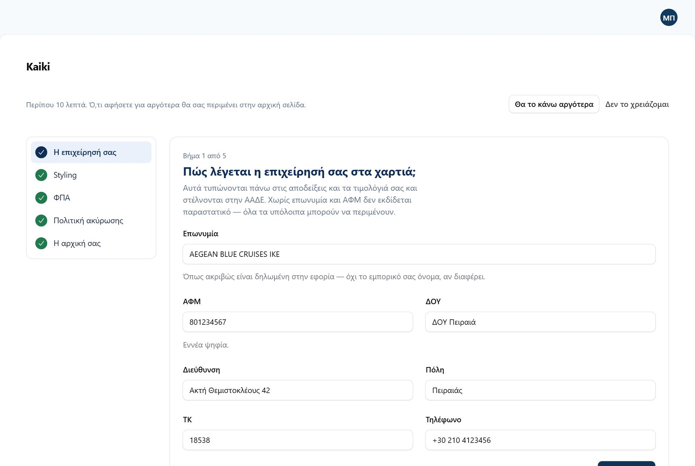
Ο οδηγός. Αριστερά τα βήματα, δεξιά η μία ερώτηση που απαντάτε τώρα, με το
γιατί χρειάζεται. Πάνω δεξιά οι δύο έξοδοι: «Θα το κάνω αργότερα» και «Δεν το
χρειάζομαι».
Η επιχείρησή σας. Επωνυμία όπως είναι στην εφορία, ΑΦΜ, ΔΟΥ,
διεύθυνση, τηλέφωνο. Τυπώνονται στα παραστατικά σας.
Λογότυπο και χρώματα (στον οδηγό γράφει «Styling»). Το λογότυπό
σας και, προαιρετικά, ένα δεύτερο για σκούρο φόντο — την
ανοιχτόχρωμη εκδοχή, αν το κανονικό χάνεται πάνω σε σκούρο.
ΦΠΑ. Ο συντελεστής που ισχύει για τις περισσότερες εκδρομές σας.
Αν δεν τον ξέρετε, το αφήνετε για αργότερα και ρωτάτε τον λογιστή σας — ο οδηγός
δεν σας προτείνει ποσοστό.
Πολιτική ακύρωσης. Διαλέγετε μία από τις έτοιμες (π.χ.
«Ευέλικτη», «Κανονική», «Αυστηρή»). Γίνεται η προεπιλεγμένη σας και την αλλάζετε
όποτε θέλετε από τις Πολιτικές ακύρωσης.
Η αρχική σας. Μόνο αν έχετε πλήρη ιστοσελίδα από το Kaiki: σας
πηγαίνει να συνθέσετε την αρχική σας σελίδα. Όποιος έχει μόνο σελίδες κρατήσεων
δεν βλέπει καν αυτό το βήμα.
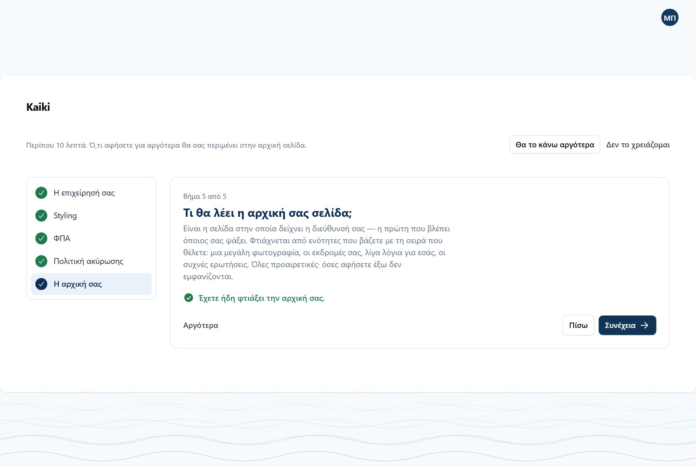
Το τελευταίο βήμα. Ο λογαριασμός της επίδειξης το έχει ήδη κάνει, γι' αυτό
γράφει «Έχετε ήδη φτιάξει την αρχική σας».
Κάθε «Συνέχεια» αποθηκεύει το βήμα που είστε. Αν κλείσετε το
παράθυρο στη μέση, ό,τι γράψατε έχει μείνει.
«Αργότερα» αφήνει ένα βήμα ανοιχτό και πάει στο επόμενο.
«Θα το κάνω αργότερα» ανοίγει αμέσως τον πίνακα· ο οδηγός μένει
πρώτος στο μενού ως «Πρώτη ρύθμιση», με έναν αριθμό για όσα λείπουν.
«Δεν το χρειάζομαι» τον βγάζει από το μενού. Τον ξαναβρίσκετε
πάντα στις Ρυθμίσεις → κάρτα «Πρώτη ρύθμιση».
Τον οδηγό τον βλέπει μόνο ο ιδιοκτήτης. Αν έχει στήσει τον λογαριασμό για εσάς η
πλατφόρμα, μπορεί να τον έχει κλείσει εξαρχής.
Τα πρώτα σας βήματα, στην αρχική
Ο οδηγός ρωτά για τον λογαριασμό. Τον κατάλογο — σκάφος, περιόδους, εκδρομή — τον
φτιάχνετε από τις κανονικές του οθόνες, και όσο λείπει κάτι η αρχική του πίνακα
δείχνει πάνω πάνω τη λίστα «Τα πρώτα σας βήματα», με αυτή τη σειρά:
Προσθέστε το σκάφος σας. Η χωρητικότητα βγαίνει από εδώ.
Ορίστε τις περιόδους σας — προαιρετικό, αν η τιμή είναι ίδια όλο
τον χρόνο.
Δημιουργήστε μια εκδρομή.
Δημοσιεύστε την. Μια πρόχειρη εκδρομή δεν την κλείνει κανείς.
Βάλτε την στο ημερολόγιο — να έχει αναχωρήσεις.
Κάθε γραμμή έχει κουμπί που σας πηγαίνει στη σωστή οθόνη, και η λίστα φεύγει μόνη
της όταν τελειώσουν όλα.
Δεν φαίνεται στις εικόνες
Ο λογαριασμός της επίδειξης έχει ήδη σκάφη, εκδρομές και αναχωρήσεις, οπότε η
λίστα «Τα πρώτα σας βήματα» δεν εμφανίζεται στις εικόνες αυτού του εγχειριδίου.
Σκάφη
Σκάφη. Όνομα, τύπος, μέγιστοι επιβάτες, λιμάνι βάσης, χρόνος
προετοιμασίας και κατάσταση. Πάνω από τη λίστα, η καρτέλα «Δεσμεύσεις σκάφους»
ανοίγει τις δεσμεύσεις.
Η σειρά των σκαφών ορίζεται με σύρσιμο. Πατάτε το κουμπί με τα δύο
βελάκια πάνω αριστερά στη λίστα και σέρνετε κάθε σκάφος στη θέση του. Με αυτή τη
σειρά εμφανίζονται στην αρχική, στο ημερολόγιο και στις επιλογές.
Πάνω από τη λίστα γράφει πόσα σκάφη χρησιμοποιείτε από όσα περιλαμβάνει το πακέτο
σας — «Έχετε 3 από 5 σκάφη του πακέτου Fleet». Το Solo και η δοκιμή περιλαμβάνουν ένα
σκάφος, το Fleet πέντε, το Pro όσα θέλετε.
Στο όριο του πακέτου. Το «Νέο σκάφος» έχει γίνει «Αναβάθμιση πακέτου», και
από πάνω γράφει τι περιλαμβάνει το πακέτο. Τα σκάφη που υπάρχουν μένουν όλα.
(Εικόνα της 14ης Σεπτεμβρίου: ο λογαριασμός που τη δείχνει δεν υπάρχει πια στην
επίδειξη.)
Τίποτα δεν χάνεται
Το όριο ελέγχεται μόνο τη στιγμή που φτιάχνετε καινούργιο σκάφος. Αν αλλάξει το
πακέτο σας, κανένα σκάφος δεν σβήνεται, δεν κρύβεται και δεν σταματά να πουλάει·
απλώς δεν προστίθεται άλλο μέχρι να χωράει.
Δύο πεδία κάνουν περισσότερη δουλειά απ' όση φαίνεται:
Μέγιστοι επιβάτες
Είναι νόμιμο όριο, όχι πρόταση. Καμία εκδρομή και καμία αναχώρηση
δεν το ξεπερνά, ούτε όταν κάνετε κράτηση με το χέρι — και η φόρμα της εκδρομής δεν
σας αφήνει να γράψετε μεγαλύτερο «Μέγιστα άτομα». Αν προσπαθήσετε να το μειώσετε
ενώ υπάρχουν ήδη κρατήσεις για περισσότερα άτομα, το Kaiki αρνείται και σας λέει
ποιες εγγραφές το εμποδίζουν.
Χρόνος προετοιμασίας
Πόσα λεπτά χρειάζεστε ανάμεσα σε δύο εκδρομές του ίδιου σκάφους — καθάρισμα,
καύσιμα, αλλαγή πληρώματος. Το Kaiki δεν θα πουλήσει ποτέ δύο εκδρομές που
πέφτουν μέσα σε αυτό το διάστημα. Αφήστε το κενό για να ισχύσει η γενική ρύθμιση
του λογαριασμού — η λίστα τότε γράφει «(λογαριασμός)» δίπλα στον αριθμό.
Μέγιστος άνεμος
Αν συμπληρώσετε πόσα μποφόρ αντέχει το σκάφος, θα βλέπετε προειδοποίηση στην
αρχική όταν η πρόγνωση τα ξεπερνά. Τίποτε δεν ακυρώνεται αυτόματα —
η απόφαση είναι πάντα δική σας. Αφήστε το κενό αν δεν θέλετε προειδοποιήσεις.
Αριθμοί με − και +
Σε όλο τον πίνακα, τα πεδία με αριθμό — επιβάτες, λεπτά, ώρες, ηλικίες — έχουν
ένα «−» αριστερά και ένα «+» δεξιά. Μπορείτε να πατάτε αυτά ή να γράφετε τον
αριθμό, όπως σας βολεύει· στο κινητό είναι πολύ πιο εύκολο από το πληκτρολόγιο.
Λιμάνια και σημεία συνάντησης
Λιμάνια. Και σημεία συνάντησης που δεν είναι λιμάνια — μια παραλία, ένα
περίπτερο, μια συγκεκριμένη προβλήτα μέσα σε μεγάλη μαρίνα.
Το πεδίο Πώς θα μας βρείτε μπαίνει αυτούσιο στο email επιβεβαίωσης και στη
σελίδα της κράτησης. Είναι το πιο χρήσιμο πεδίο της οθόνης και το πιο συχνά κενό:
«συνάντηση στο μπλε περίπτερο, 15 λεπτά πριν την αναχώρηση» γλιτώνει τηλεφωνήματα
κάθε πρωί.
Οι συντεταγμένες είναι προαιρετικές αλλά πολύ πιο ακριβείς από μια διεύθυνση — με
αυτές ο επισκέπτης βλέπει χάρτη στη σελίδα της κράτησής του. Αντιγράψτε τες από την
πινέζα του χάρτη.
Περίοδοι
Περίοδοι. Δική τους θέση στο μενού, στον «Κατάλογο». Μία περίοδος μπορεί
να έχει πολλά διαστήματα ημερομηνιών — μια «Υψηλή περίοδος» που καλύπτει και το
Πάσχα και τον Αύγουστο είναι μία περίοδος, όχι δύο.
Μια περίοδος είναι ένα κομμάτι του χρόνου με δική του τιμή — «Θερινή, 1 Ιουνίου ως
15 Σεπτεμβρίου». Την ορίζετε μία φορά και τη χρησιμοποιούν όλες οι
εκδρομές σας. Αν έχετε μία τιμή όλο τον χρόνο, δεν χρειάζεστε καμία: κάθε εκδρομή
ξεκινά ήδη με τιμή «όλο τον χρόνο».
Όταν δύο περίοδοι καλύπτουν την ίδια ημερομηνία, κερδίζει αυτή με τη
μεγαλύτερη προτεραιότητα. Έτσι ο «Δεκαπενταύγουστος» υπερισχύει
του «Καλοκαιριού» χωρίς να χρειαστεί να κόψετε το καλοκαίρι στα δύο. Και οι δύο
άκρες μιας περιόδου μετράνε.
Πολιτικές ακύρωσης
Πολιτικές ακύρωσης. Δική τους θέση στο μενού, στον «Κατάλογο». Ο επισκέπτης
βλέπει την πολιτική πριν πληρώσει, και το Kaiki την εφαρμόζει μόνο του όταν
κάποιος ακυρώσει.
Την πρώτη σας την έχετε ήδη διαλέξει στον οδηγό, από τα έτοιμα πρότυπα. Εδώ την
αλλάζετε ή φτιάχνετε κι άλλες. Μια πολιτική έχει τρία μέρη:
Δωρεάν ακύρωση. Όσο απομένουν τουλάχιστον τόσες ώρες, η
επιστροφή είναι 100% και η κλίμακα δεν εξετάζεται καθόλου.
Κλίμακα. Κάθε γραμμή λέει «ακύρωση τουλάχιστον τόσες μέρες
πριν, τόσο επιστροφή». Εφαρμόζεται η γραμμή με τις περισσότερες μέρες που
ισχύει ακόμη. Αν δεν ισχύει καμία, η επιστροφή είναι 0%.
Ακύρωση λόγω καιρού. Ισχύει όταν ακυρώνετε εσείς την
αναχώρηση, ανεξάρτητα από την κλίμακα — και μπορεί να είναι κουπόνι αντί για
χρήματα, με δική του διάρκεια ισχύος σε μήνες.
Η πολιτική παγώνει τη στιγμή της κράτησης
Κάθε κράτηση κρατά αντίγραφο της πολιτικής που ίσχυε όταν έγινε. Αν αλλάξετε
την πολιτική τον Ιούλιο, οι κρατήσεις του Ιουνίου ακυρώνονται με τους όρους
του Ιουνίου. Αυτό δεν είναι ρύθμιση — είναι το πώς δουλεύει, και σας προστατεύει
όσο και τον πελάτη.
Νέα εκδρομή, σε πέντε βήματα
Εκδρομές. Ό,τι πουλάτε: ημερήσια, ηλιοβασίλεμα, ιδιωτική ναύλωση,
μεταφορά. Σε κάθε γραμμή το σκάφος, ο τρόπος πώλησης, η κατάσταση, οι θέσεις, η
τιμή «από», και ο σύνδεσμος «Δείτε τη σελίδα» προς τη σελίδα που βλέπει ο
επισκέπτης.
Το «Προσθήκη» στις Εκδρομές ανοίγει έναν οδηγό πέντε βημάτων. Μία ερώτηση
ανά βήμα, με τη σειρά που χρειάζονται οι απαντήσεις — και στο τέλος η εκδρομή είναι
ολόκληρη: ώρες, τιμές, κείμενα, φωτογραφίες.
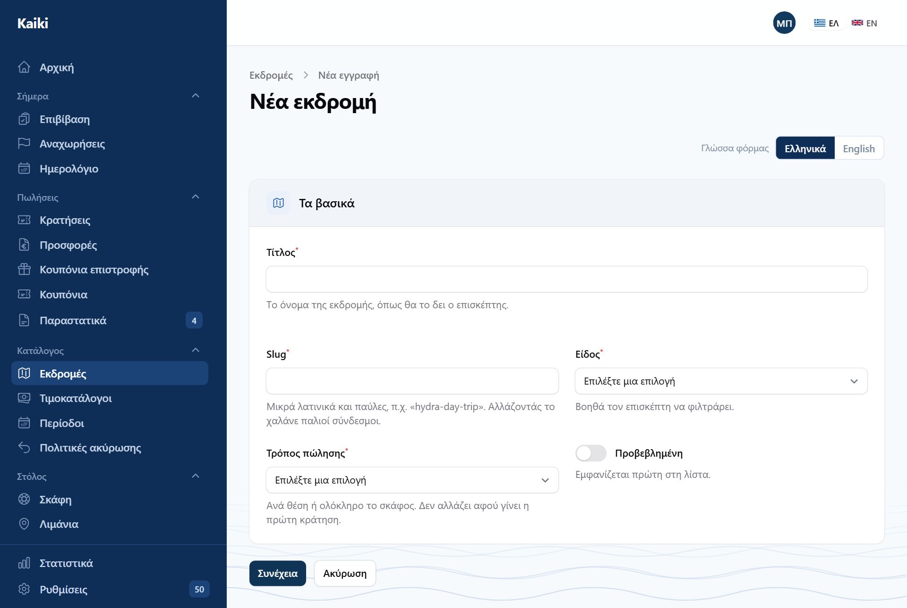
Βήμα 1, «Τα βασικά». Τίτλος στα ελληνικά και στα αγγλικά, σκάφος, είδος,
και τρόπος πώλησης. Πάνω, η σειρά των πέντε βημάτων.
Τα βασικά. Τίτλος (ελληνικά και αγγλικά), σκάφος, είδος
εκδρομής και τρόπος πώλησης: Ανά θέση (ο καθένας κλείνει
τις θέσεις του), Ολόκληρο το σκάφος (ιδιωτική ναύλωση) ή Κατόπιν
προσφοράς (ο επισκέπτης ρωτά κι εσείς στέλνετε τιμή). Η διεύθυνση της
εκδρομής στο internet φτιάχνεται μόνη της από τον τίτλο.
Πότε φεύγει. Διάρκεια, πόσα λεπτά νωρίτερα έρχεται ο επισκέπτης,
σημείο συνάντησης, μέγιστα άτομα, και τα δρομολόγια: για το καθένα
οι μέρες, μία ή περισσότερες ώρες, και από πότε έως πότε ισχύει. Βάζετε όσα
δρομολόγια χρειάζεστε — π.χ. καθημερινά στις 10:00 και στις 18:00, και
Σαββατοκύριακα στις 12:00 μόνο τον Αύγουστο.
Τιμές. Ξεκινούν τρεις έτοιμες ηλικιακές κατηγορίες — ενήλικας,
παιδί, βρέφος. Αλλάζετε ηλικίες και ονόματα, σβήνετε όποια δεν θέλετε, και γράφετε
δίπλα σε καθεμιά την τιμή σε ευρώ. Από κάτω, αν κάποια περίοδος
κοστίζει αλλιώς, «Τιμή για περίοδο». Για ναύλωση ολόκληρου σκάφους, η τιμή του
σκάφους, με τον ίδιο τρόπο ανά περίοδο.
Σελίδα. Ό,τι διαβάζει ο επισκέπτης: υπότιτλος, ετικέτα πάνω στη
φωτογραφία, περιγραφή, φωτογραφίες, πρόγραμμα. Όλα προαιρετικά — συμπληρώνονται
και αργότερα.
Δημοσίευση. Πολιτική ακύρωσης (κενό σημαίνει η προεπιλεγμένη
σας), συντελεστής ΦΠΑ, αν ζητάτε στοιχεία επιβατών, και τι να γίνει στο τέλος:
Δημοσίευση τώρα ή Να μείνει πρόχειρη. Αν λείπει κάτι για τη
δημοσίευση, σας το λέει και η εκδρομή μένει πρόχειρη.
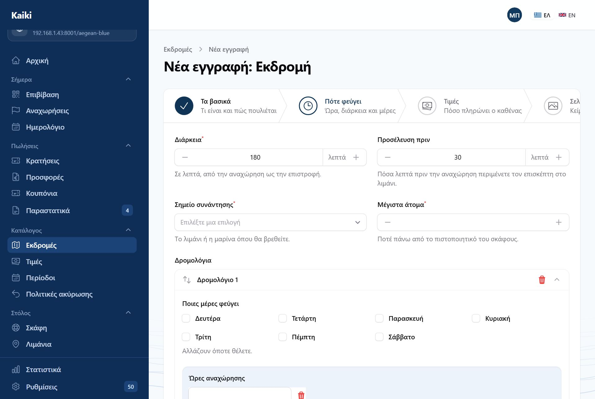
Βήμα 2, «Πότε φεύγει». Κάθε δρομολόγιο είναι ένα κουτί με τις μέρες και τις
ώρες του. Το «Κι άλλο δρομολόγιο» από κάτω προσθέτει δεύτερο.
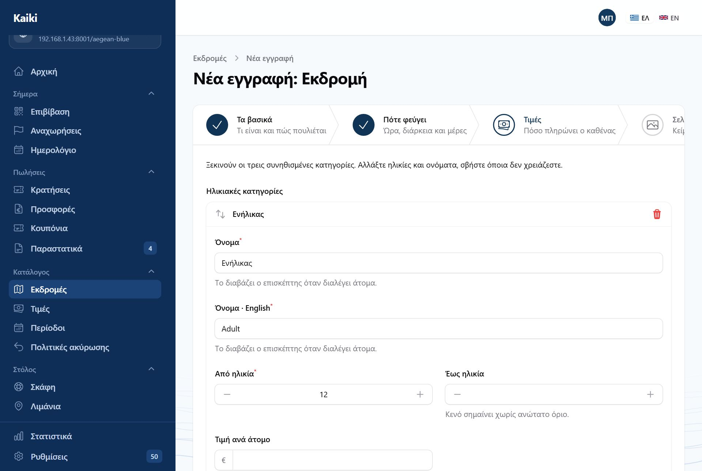
Βήμα 3, «Τιμές». Οι τρεις συνηθισμένες κατηγορίες είναι ήδη εκεί, με ηλικίες
και ονόματα στις δύο γλώσσες. Γράφετε μόνο την τιμή ανά άτομο.
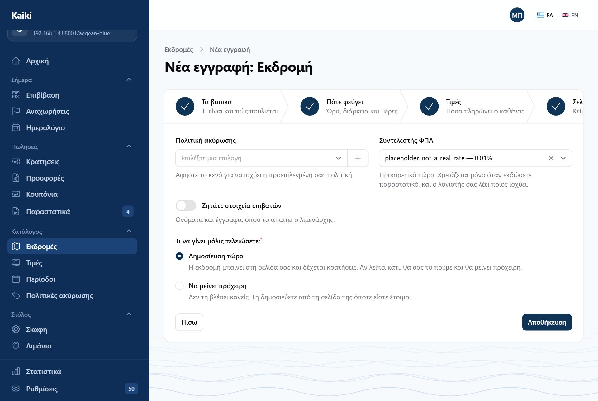
Βήμα 5, «Δημοσίευση». Οι όροι χωρίς τους οποίους δεν δημοσιεύεται εκδρομή,
και η επιλογή ανάμεσα σε «τώρα» και «πρόχειρη». Το «+» δίπλα στην πολιτική φτιάχνει
καινούργια χωρίς να φύγετε από τη σελίδα.
Δεν χρειάζεται «Ορίζοντας»
Οι αναχωρήσεις βγαίνουν από τα δρομολόγια μόνες τους, περίπου έναν χρόνο μπροστά,
και συμπληρώνονται καθώς περνούν οι μέρες. Το παλιό πεδίο «Ορίζοντας», που ρωτούσε
πόσες μέρες μπροστά να φτιάχνονται, δεν υπάρχει πια.
Η εκδρομή, σε πέντε καρτέλες
Όταν ανοίγετε μια εκδρομή που υπάρχει, τη βλέπετε σε πέντε καρτέλες: Βασικά,
Πότε φεύγει, Τιμές, Όροι,
Σελίδα. Οι αλλαγές σώζονται με τα κουμπιά στο κάτω μέρος.
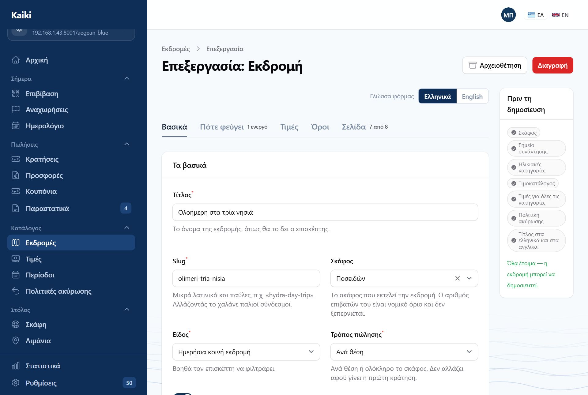
Καρτέλα «Βασικά». Πάνω ο διακόπτης «Ελληνικά / English» για όλη τη φόρμα.
Δεξιά η στήλη «Πριν τη δημοσίευση», γιατί αυτή η εκδρομή είναι ακόμη πρόχειρη.
Ένας διακόπτης γλώσσας. Το «Ελληνικά / English» πάνω από τις
καρτέλες αλλάζει τη γλώσσα σε όλα τα πεδία κειμένου μαζί, αντί για ένα ζευγάρι
καρτέλες σε κάθε πεδίο.
Αριθμοί πάνω στις καρτέλες. Το «Πότε φεύγει» γράφει πόσα
δρομολόγια είναι ενεργά, το «Σελίδα» πόσα από τα πεδία της σελίδας έχετε
συμπληρώσει. Αν μια καρτέλα έχει κάτι που λείπει, η ένδειξή της γίνεται
πορτοκαλί.
Αρχειοθέτηση και Διαγραφή είναι πάνω δεξιά. Η αρχειοθέτηση
βγάζει την εκδρομή από την πώληση χωρίς να χαθεί τίποτα.
Πριν τη δημοσίευση
Η στενή στήλη δεξιά δείχνει με μια ματιά τι χρειάζεται για να δημοσιευτεί η
εκδρομή: σκάφος, σημείο συνάντησης, ηλικιακές κατηγορίες, τιμοκατάλογος, τιμές για
όλες τις κατηγορίες, πολιτική ακύρωσης, τίτλος στα ελληνικά και στα αγγλικά. Όταν
είναι όλα εντάξει γράφει «Όλα έτοιμα».
Σε μια δημοσιευμένη εκδρομή που δεν της λείπει τίποτα, η στήλη δεν
εμφανίζεται και η φόρμα πιάνει όλο το πλάτος. Ξαναεμφανίζεται μόνη της αν
κάτι χαθεί — π.χ. σβήσετε το τελευταίο δρομολόγιο.
Βασικά
Τίτλος, διεύθυνση (slug), σκάφος, είδος, τρόπος πώλησης και «Προβεβλημένη» (να
βγαίνει πρώτη στη λίστα). Ο τρόπος πώλησης δεν αλλάζει αφού γίνει η πρώτη
κράτηση.
Προσοχή στο slug
Αλλάζοντας το slug μιας εκδρομής που είναι ήδη δημοσιευμένη,
χαλάνε όλοι οι παλιοί σύνδεσμοι — όσοι έχετε στείλει με email,
όσοι είναι σε ανάρτηση, όσοι έχει καταχωρίσει η Google. Γι' αυτό το Kaiki
συμπληρώνει μόνο ένα κενό πεδίο και δεν ξαναγράφει ποτέ ένα που έχετε ορίσει.
Πότε φεύγει
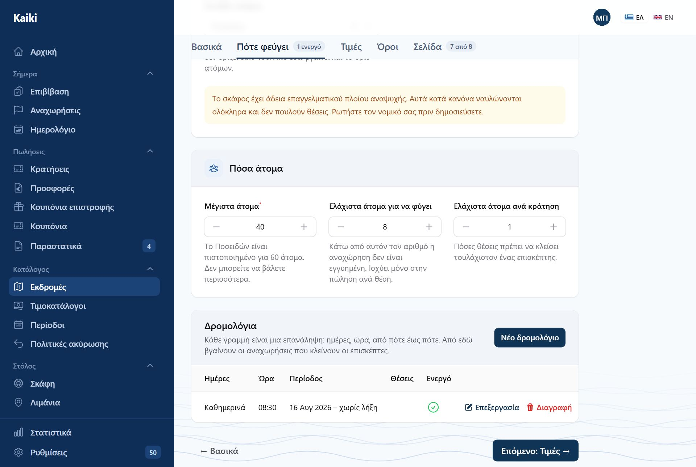
Καρτέλα «Πότε φεύγει». Πόσα άτομα — με υπενθύμιση για το πιστοποιητικό του
σκάφους — και από κάτω τα δρομολόγια της εκδρομής, ένα ανά γραμμή.
Διάρκεια, προσέλευση, σημείο συνάντησης, και τρεις αριθμοί ατόμων: τα
μέγιστα (ποτέ πάνω από το σκάφος), τα ελάχιστα για να
φύγει η αναχώρηση και τα ελάχιστα ανά κράτηση. Από κάτω τα
δρομολόγια: «Νέο δρομολόγιο», ή «Επεξεργασία» σε όποιο θέλετε. Από
αυτά βγαίνουν οι αναχωρήσεις.
Τα δρομολόγια δεν έχουν πια δική τους θέση στο μενού — ζουν μέσα στην εκδρομή τους.
Στον οδηγό νέας εκδρομής κάθε δρομολόγιο γράφει στον τίτλο του τι είναι, π.χ.
«Δρομολόγιο 2 — Τετάρτη, Πέμπτη · 11:00», ώστε να το βρίσκετε χωρίς να το ανοίξετε.
Το Kaiki δεν δέχεται δεύτερο δρομολόγιο για την ίδια ακριβώς αναχώρηση.
Ένα δρομολόγιο δεν είναι αναχώρηση· είναι ο κανόνας που τις φτιάχνει. Αφού
δημιουργηθούν, οι αναχωρήσεις ζουν χωριστά στις Αναχωρήσεις: μπορείτε να
ακυρώσετε ή να αλλάξετε μία χωρίς να πειραχτεί ο κανόνας. Για μια εκδρομή που θα γίνει
μία φορά δεν χρειάζεται δρομολόγιο — την προσθέτετε απευθείας από τις
Αναχωρήσεις.
Τιμές
Η καρτέλα έχει τέσσερα κομμάτια, από πάνω προς τα κάτω:
Ηλικιακές κατηγορίες. Όνομα, από ηλικία, έως ηλικία, και τέσσερις
διακόπτες: Βασική κατηγορία (αυτή δίνει την τιμή «από»), Πιάνει
θέση (ένα βρέφος στην αγκαλιά δεν πιάνει), Χρειάζεται συνοδό ενήλικα
και Χωρίς έγγραφο (δεν ζητείται αριθμός εγγράφου, π.χ. για βρέφη). Κάθε
κατηγορία γράφει στον τίτλο της το όνομά της· τη σειρά τις αλλάζετε σέρνοντάς
τες. Τα βρέφη μετράνε στην κατάσταση επιβατών ακόμη κι όταν δεν πιάνουν
θέση.
Τιμοκατάλογοι. Ένας ανά περίοδο: πότε ισχύει, τι προκαταβολή
ζητάτε και πότε δέχεστε κρατήσεις. Φτιάχνονται εδώ, με το «Νέος τιμοκατάλογος» —
δεν υπάρχει πια χωριστή οθόνη για νέο τιμοκατάλογο.
Τιμές σε ευρώ. Ένας πίνακας: γραμμές οι κατηγορίες, στήλες οι
περίοδοι, σε κάθε κελί η τιμή για ένα άτομο.
Πρόσθετα. Ό,τι προσφέρετε μαζί με την εκδρομή. Τα δωρεάν
εμφανίζονται στα «Περιλαμβάνονται»· όσα έχουν χρέωση τα διαλέγει ο επισκέπτης στην
κράτηση.
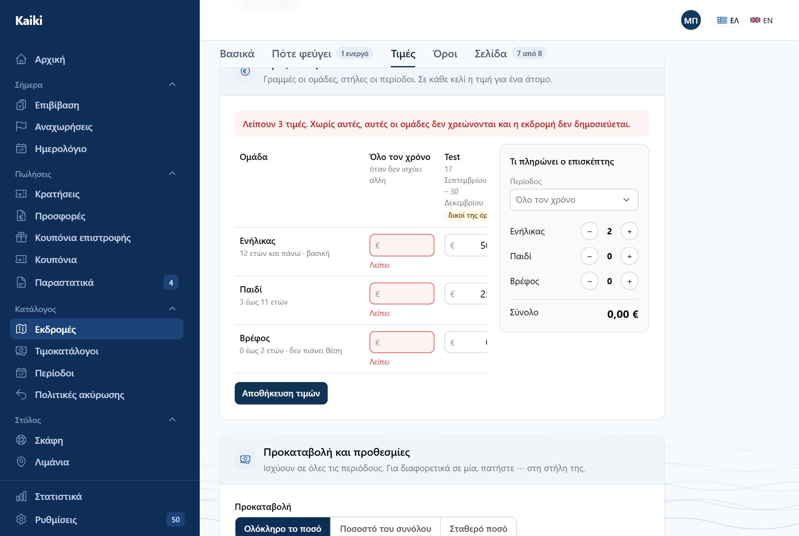
Τιμές σε ευρώ. Τα κουμπιά «Ίδια», «Μισή τιμή», «−30%», «Δωρεάν» κάτω από
κάθε κατηγορία γράφουν ποσό από την τιμή της βασικής. Δεξιά, «Τι πληρώνει ο
επισκέπτης»: αλλάζετε άτομα με − και + και βλέπετε το σύνολο.
Αποθηκεύεται το ποσό, όχι το ποσοστό. Αν πατήσετε «Μισή τιμή» για
το παιδί με ενήλικα 50 €, γράφεται 25,00 €, και μένει 25,00 € ακόμη κι αν αλλάξετε
αργότερα την τιμή του ενήλικα. Πατάτε Αποθήκευση τιμών κάτω από τον πίνακα.
Στην τιμή περιλαμβάνεται ΦΠΑ.
Προκαταβολή και προθεσμίες
Ορίζονται στον τιμοκατάλογο κάθε περιόδου: προκαταβολή ως ποσοστό ή σταθερό ποσό,
πόσες ώρες πριν την αναχώρηση κλείνουν οι κρατήσεις (0 σημαίνει μέχρι την τελευταία
στιγμή) και πόσες μέρες νωρίτερα μπορεί κανείς να κλείσει (κενό σημαίνει χωρίς όριο).
Η προκαταβολή ισχύει μόνο αν την έχετε ανοίξει στις Ρυθμίσεις → Πληρωμές.
«Τιμοκατάλογοι» στο μενού. Όλοι οι τιμοκατάλογοι όλων των εκδρομών σε μία λίστα,
ομαδοποιημένοι ανά εκδρομή, για να τους δείτε μαζί. Καινούργιος φτιάχνεται μέσα
στην εκδρομή.
Όροι
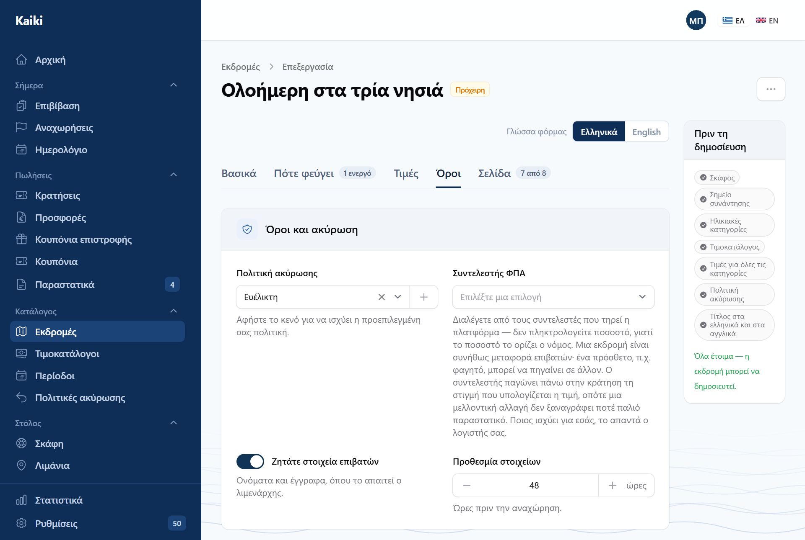
Καρτέλα «Όροι». Πολιτική ακύρωσης, συντελεστής ΦΠΑ, στοιχεία επιβατών με
την προθεσμία τους· πιο κάτω οι επιπλέον ερωτήσεις.
Πολιτική ακύρωσης — κενό σημαίνει η προεπιλεγμένη σας.
Συντελεστής ΦΠΑ — από τη λίστα της πλατφόρμας· δεν γράφετε
ποσοστό.
Ζητάτε στοιχεία επιβατών, και ως πόσες ώρες πριν την αναχώρηση
πρέπει να έχουν δοθεί.
Ερωτήσεις στην κράτηση — ό,τι θέλετε να ρωτάτε τον επισκέπτη στην
πληρωμή, για κάθε επιβάτη ή μία φορά για την κράτηση.
Σελίδα
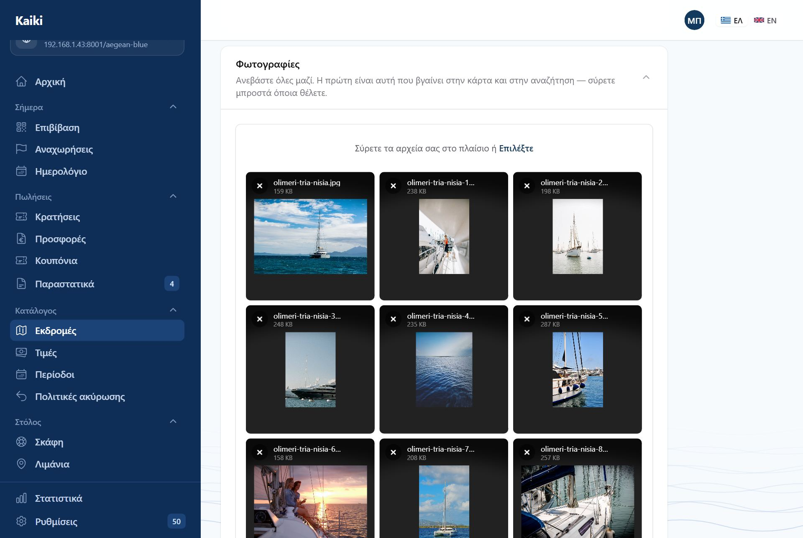
Φωτογραφίες. Ένα πλαίσιο για όλες. Η πρώτη είναι αυτή που βγαίνει στην κάρτα
και στην αναζήτηση.
Κείμενα: υπότιτλος (και στην κάρτα και στην αναζήτηση), ετικέτα
πάνω στη φωτογραφία («Δημοφιλές», έως 24 χαρακτήρες), περιγραφή.
Φωτογραφίες: τις ανεβάζετε όλες μαζί στο ίδιο πλαίσιο.
Η πρώτη είναι η κεντρική· σύρετε μπροστά όποια θέλετε.
Περιεχόμενο σελίδας: «Τι θα ζήσετε», το πρόγραμμα με ώρες, και
τα υπόλοιπα προαιρετικά πεδία. Όσα μείνουν κενά δεν εμφανίζονται πουθενά και δεν
εμποδίζουν τη δημοσίευση.
Συχνές ερωτήσεις της εκδρομής. Όσες αφορούν μόνο αυτή την
εκδρομή, στη σελίδα της. Όσες αφορούν όλη την επιχείρηση γράφονται στις
Ρυθμίσεις → Συχνές ερωτήσεις και βγαίνουν σε κάθε εκδρομή.